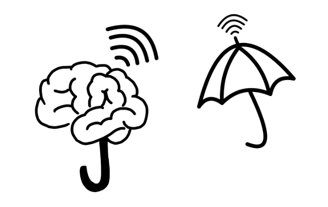
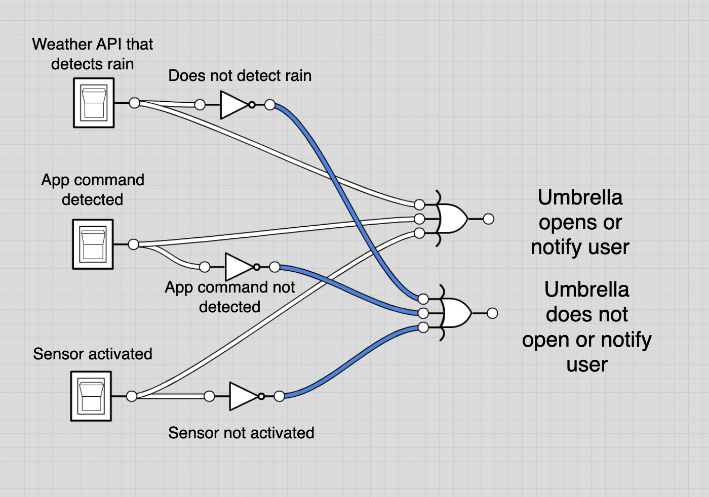

WIREFRAME & LOGO


Spring 2022
Project Manager & Programmer
SmartBrella is an automated umbrella that opens and closes when a sound command is detected. It is also Bluetooth-connected to an app, allowing users to control the umbrella more conveniently. The SmartBrella was made possible with Computer-Aided Design (CAD), Python, and Arduino. This project was funded by the NYU Tandon EG1003 course.
Around 15% of people in the world have disabilities, 28% are blind or have vision impairment and 17 million are amputees.
This causes inconveniences when trying to perform simple actions.
The umbrella, an item everyone has at home, needs to be manually opened and closed, requiring a lot of strength to open and close.
Modifying the umbrella to automatically open and close will help a lot of people who have trouble performing these actions.
We hope to create convenience and improve daily lives with an umbrella made of higher quality.
Not only does this umbrella offer greater protection against harsh weather compared to the common alternative, but it also creates a world better suited for people with disabilities.
By creating an app that controls the umbrella, we will make bigger strides toward building a more friendly environment for the disabled.
To make the umbrella automatically open and close, a pulley was required.
The pulley consisted of two VEX motors, a LEGO gear, a metal axle, a long yarn string, and two shaft collars.
The axle is used to connect the two motors together, while also having the gear placed on the center of the axle with shaft collars on each side of the gear to keep it in place.
One end of the string is tied onto the gear and the other end is tied to the inside of the umbrella.
A KY-038 sound sensor, wires, an Arduino UNO board, a breadboard, and a DC motor driver controller board was used to make the umbrella open and close when the sound sensor detects a sound.
To let the motor move when a sound is detected, the motor would have wires connected to the controller board.
Other wires were then used to connect the controller board to the breadboard, which would connect to the Arduino UNO board and the sound sensor.
A Bluefruit Bluetooth module was also wired onto the breadboard to allow Bluetooth to send messages to the motors.
Duct tape was used to put all the previously listed materials together and attached to the umbrella.


Arduino IDE was used to code the Arduino UNO unit used in the SmartBrella. The libraries used for the Arduino code included the Adafruit BLE library and the standard Arduino library. The script was programmed to recognize the sound of a clap through a microphone, signified by a LOW signal transmitted from the microphone’s input pin, and decide whether to stop the motor or begin turning it clockwise or counterclockwise. The script kept track of the last direction turned.


The VEX motors used had difficulties with the force needed to wind up the string and pull down the umbrella due to the strength of the springs holding the umbrella.
When the force required to pull down the string became larger than the motors could withstand, the motors would simply lock up and refuse to move further.
In order to get more force out of the motors, two motors were connected with one axle in between.
Difficulties were also experienced in the sound sensor, as the sensor was extremely sensitive to being touched and would react as if a loud sound was emitted near it when touched, however actual loud sounds such as claps nearby were not consistently recognized.
Attempting to increase the sensitivity of the sound sensor alleviated the issue somewhat.
In creating the handle, difficulties were encountered in trying to find a way to package the mechanical pieces and wires.
3D modeled or laser-cut containers were considered, but ultimately duct tape and cardboard were used to package the materials.
The umbrella is paired with an application that allows the remote opening and closing of the umbrella, as well as the ability to connect with weather APIs and remind the user to bring their umbrella if rain is predicted. The app and the umbrella are connected through a Bluetooth chip, which allows opening and closing messages to be sent to the umbrella.
Through our team’s hard work and tenacity, we have successfully prototyped, designed, and built a multifunctional smart umbrella. Our product aims to make umbrellas accessible for paraplegic individuals, amputees, or others with similar impairments like Parkinson's disease and blindness (accommodated by SmartBrella’s sound recognition capabilities). The result of our innovation is an umbrella that can automatically open and close based on sound recognition and through a smartphone device with Bluetooth capabilities (the app component provides functionality for the user). The app component is an important aspect of our smart umbrella, as it not only reminds the user to bring an umbrella when it is raining but also enables the user to open and close the umbrella with a push of a button.